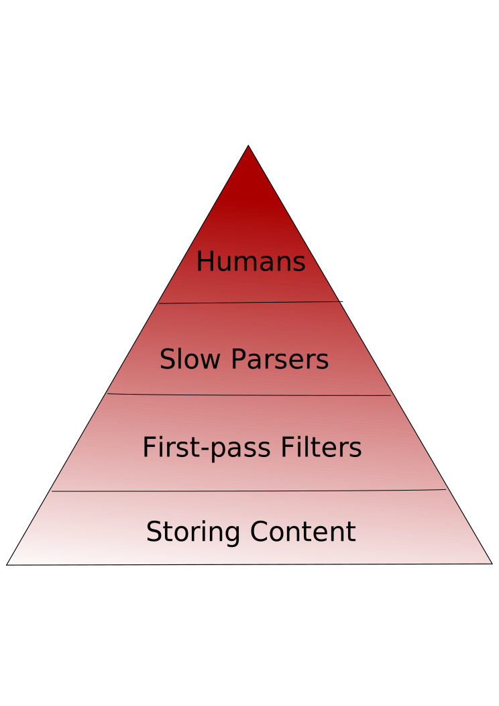

Novetta's Innovation Challenge 2014
DMarcate
Innovators:
Bryan Jacobs
Davin Shearer
What we hope to cover
- Introduction and Rationale
- Introduction to DMarcate
- Advantages of DMarcate
- The Innovation
- The Business Advantage
- The Feasibility
Why analyze high speed network traffic?
- Infiltration detection
- Exfiltration detection
- Malicious software detection
- Intelligence gathering
- Marketing and financial analytics
- Parental controls / Censorship
- Low-latency, high speed trading
The Problem: Network traffic volumes have grown far
faster than analysts' ability to review it.
The Only Solution: Automate some of the work of
analysis.
Retain as much as possible, review only "important" content

Current approach: Novetta Cyber Analytics (NCA)
NCA fundamentally is a tool for helping analysts focus on
"important" content.
This is primarily done in the following ways:
- High speed / High bandwidth session reconstruction and
storage engine
- Makes both meta-data and raw session contents searchable
- Largely meta-data oriented
- Checks incoming traffic for interesting patterns
Problems with NCA's current content analysis
- Rules (Bro scripts, Snort rules) are complex, difficult to
write and error prone
- Difficult to understand
- Processing of rules can become the limiting factor on
system throughput
Lacks the ability to handle unstructured content effectively
and efficiently.
Time is working against us
The sophistication and complexity of the pre-filtering a
packet must go through before being reviewed by a human must grow
with the amount of network traffic being analyzed.
The explosion of network traffic is outpacing hardware
advancements. Throwing more hardware at the problem only gets us so
far.
What if we could go back to basics and get the same
quality results?
DMarcate:
Fusion of Novetta Cyber Analytics' high-speed packet
processing with WPText's matching engine
NCA
WPText
Attaches annotations (AKA labels or tags) to streaming
content based on what it finds
Produces annotations from
content bodies, not just from
structured
meta-data.
Nothing is missed.
When combined with NCA’s high-speed packet dispatch, these
annotations can be used to route flows to more expensive
processing.
Separates the wheat from the chaff.
Example:
Parable of the naïve network administrator
A network administrator is given the task of monitoring email
communications, but is shocked to find
no traffic on TCP port
25 (SMTP)!
Why?
We use webmail,
where the communication travels over HTTP!
DMarcate looks at
all traffic.
DMarcate can determine if a stream contains email traffic and send it
to a separate specialized
parser which processes the header
information, extracts attachments and so forth.
Who? Where? When? How?
United Airlines Confirmation: JFX3EX SHEARER/DAVINMMR
Mon, 02JUN14 UA704
BALTIMORE, MD (BWI) 5:54 PM HOUSTON,
TX (IAH
-BUSH INTL) 8:21
PM Mon, 02JUN14 UA1056 HOUSTON,
TX (IAH
-BUSH INTL) 9:00
PM SAN JOSE, CA (SJC) 11:14 PM Fri,
06JUN14 UA1623 SAN
JOSE, CA (SJC) 2:30 PM DENVER, CO (DEN) 5:54 PM Fri,
06JUN14 UA1698 DENVER,
CO (DEN) 7:40 PM BALTIMORE, MD (BWI)
Make the answers available.
Organization
Location
Person
Date
Time
Time
Time
Annotations may also be used for tag searches, for statistical
analysis, for alerting, or for feeding into Novetta Identity
Analytics
DMarcate is
Fast
Has a much faster matching engine than its peers
Over 1,500 times faster than fgrep and uses far less memory
Tens of thousands of times faster than open-source natural
language toolkits
So it can handle more data in the same time period
Or search the same amount of data for more targets
Systems like DMarcate can do petabyte scale real-time
analysis.
Simple
Delivers immediate value without configuration
Precision and recall can be improved without a
maintenance contract.
At its heart lie simple lists of textual terms.
Viable
The technologies already exist at Novetta, but competitors
would have to invest heavily to replicate
One portable library with no forseeable roadblocks obstructing
integration
Runtime efficiency means lower hardware costs
The product synergizes well with Novetta's
existing business
Bridging the gap between two outstanding technologies would help to
sell NCA deployments and analytical software
Flexible
Language agnostic (unlike natural language parsing solutions)
No issues with text-speak, with slang, or with fragmented
or incomplete thoughts
Has a very compact, cache friendly memory footprint
Similarly configured instances can share resources
Possible to have many different matching engines running on less
hardware
Many additional uses, such as:
Malware signature detection
Sentiment analysis
Watchword triggering
Deftly handles semi-structured content
Has a powerful rules engine underneath, if/when the deployment
requires it
can learn and improve
A “corrections” file can be dynamically applied as the system runs
Mistakes made in the past do not have to continue to be mistakes in
the future
A scoring system
delivers the most relevant annotations in ambiguous cases
What’s different about DMarcate? Where’s the Innovation?
Back-to-basics approach
You don’t have to parse everything.
K.I.S.S. (
Keep
It
Super
Simple)
Requires less hardware, requires fewer engineers.
Elegant solutions are part of our corporate heritage.
Does DMarcate provide a business advantage?
Yes.
DMarcate strongly promotes commercial sales of NCA. A major feature,
more than just a bullet point in a list
Also supports ongoing malware research projects and sustains our
reputation in the cybersecurity space
Synergizes well with sales of Novetta Identity Analytics (NIA)
But is it feasible?
Eminently.
Composing existing components is not a high-risk proposition.
Integration would likely take man-weeks, not man-years.
We can be reached at davin@novetta.com and bjacobs@novetta.com for additional
follow-up